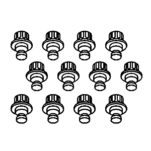

Spark |
||||||||
|
|
|
|||||||
Ilustración | Nº de herramienta / Descripción |
|---|---|
|
| CH-904 KM-904 Bastidor base |
|
| CH-49289 Bastidor de centrado |

| CH-49290 Herramienta de soporte del motor |
|
| EN-50050 09924-17810 Herramienta de ajuste del cigüeñal (con el vehículo parado) |
|
| EN-50170-01 Adaptador del manómetro de presión de aceite del motor |

| DW100-030 EN-49271 Soporte de reparación del motor |

| KM-498-B Indicador de presión |

| KM-470-B Medidor de par angular |
|
| EN-50171 Herramienta de montaje de la junta trasera del cigüeñal |
|
| EN-50172 Herramienta de montaje de la junta delantera del cigüeñal |
|
| EN-49073 Pasador del tensor de cadena de distribución |
|
| EN-50173 Compresor universal de muelles de válvula |
|
| EN-49075 Adaptador del compresor de muelles de válvula |

| EN-49076 Adaptador de presión del cilindro |
|
| EN-49259 Herramienta de desmontaje/montaje de la sonda Lambda |
|
| EN-50174 Herramienta de montaje del pistón |
|
| EN-50175 Herramienta de ajuste del cigüeñal (con el vehículo en marcha) |
|
| EN-50176 Plataforma de soporte del tren motor |
|
| EN-50177 Retención del apoyo del soporte |
|
| EN-49802 Soporte de la base |
|
| EN-48244 Soporte del palet de instalación/desmontaje del conjunto del motor |
|
 | KM-845 Dispositivo de succión del levantaválvulas |

| EN-46116 Herramienta de desmontaje de la junta del vástago de válvula |

| EN 46569 Compresor de muelles de válvula (con el vehículo apagado) |
|
| EN-50207 Herramienta de desmontaje/montaje del interruptor de presión de aceite |
| © Copyright Chevrolet. Reservados todos los derechos |